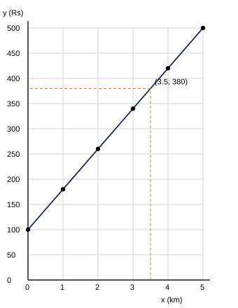

සටහන (ගුරුවරුන් සඳහා):
- I කොටස – A: එක් ප්රශ්නයකට ලකුණු 2 (නිවැරදි ක්රමයට ලකුණු 1, නිවැරදි අවසාන පිළිතුරට ලකුණු 1). — මුළු ලකුණු 30
- I කොටස – B: එක් ප්රශ්නයකට ලකුණු 10. — මුළු ලකුණු 20. II කොටස: එක් ප්රශ්නයකට ලකුණු 10; අපේක්ෂකයින් ප්රශ්න පහකට පිළිතුරු සපයයි. — මුළු ලකුණු 50. සෑම පියවරකටම හිමි ලකුණු දකුණු තීරුවේ දක්වා ඇත.
- නිවැරදි විකල්ප ක්රමවලට සම්පූර්ණ ලකුණු ලබා දෙන්න. ප්රස්තාර, රූප හා මිනුම්වලින් ලබාගන්නා අගයන් සඳහා දක්වා ඇති පරිදි සාධාරණ පරාසයක් පිළිගන්න.
I කොටස – A — පිළිතුරු
1. Tn = a + (n − 1)d = 50 + 9 × (−4) = 50 − 36
අවසාන පිළිතුර: 14
(ලකුණු 2)2. 110102 = 26, 10112 = 11 ; 26 − 11 = 15 = 11112 (හෝ දෙකේ පාදයෙන්ම අඩු කිරීම: 11010 − 01011 = 01111)
අවසාන පිළිතුර: 11112
(ලකුණු 2)3. 0.375 = 3751000 = 38
අවසාන පිළිතුර: 38
(ලකුණු 2)4. 4260 × 100
අවසාන පිළිතුර: 70%
(ලකුණු 2)5. (a + 3b)(a − 3b) = a2 − (3b)2
අවසාන පිළිතුර: a2 − 9b2
(ලකුණු 2)6. (a2b)3 = a6b3 ; a6b3 ÷ a4b = a6−4b3−1
අවසාන පිළිතුර: a2b2
(ලකුණු 2)7. 47 850 යනු 47 000 හා 48 000 අතර අගයකි; සියයේ ස්ථානයේ ඉලක්කම 8 (≥ 5) නිසා ඉහළට වටයයි
අවසාන පිළිතුර: 48 000
(ලකුණු 2)8. 4 + 11 = 2x + 3x ⇒ 15 = 5x (පරීක්ෂාව: 4 − 9 = −5 හා 6 − 11 = −5)
අවසාන පිළිතුර: x = 3
(ලකුණු 2)9. AB සිට නියත දුරකින් පිහිටි ලක්ෂ්ය AB හි දෙපැත්තේම පිහිටයි: AB ට සමාන්තරව, එක් එක් පැත්තෙන් AB සිට 3 cm ක් දුරින් රේඛා එක බැගින්
අවසාන පිළිතුර: AB සිට 3 cm බැගින් දුරින් AB ට සමාන්තර සරල රේඛා යුගලයකි
(ලකුණු 2)10. Â + B̂ = 90° ⇒ 2B̂ + B̂ = 90° ⇒ 3B̂ = 90°
අවසාන පිළිතුර: B̂ = 30°
(ලකුණු 2)11. 2πr = 132 ⇒ 2 × 227 × r = 132 ⇒ r = 132 × 744
අවසාන පිළිතුර: 21 cm
(ලකුණු 2)12. 92 + 122 = 81 + 144 = 225 = 152
අවසාන පිළිතුර: ඔව්, 92 + 122 = 152 නිසා (පයිතගරස් ප්රමේයයේ විලෝමය)
(ලකුණු 2)13. 2 < 2x ≤ 10 ⇒ 1 < x ≤ 5
අවසාන පිළිතුර: x = 2, 3, 4, 5
(ලකුණු 2)14. n(A′) = n(U) − n(A) = 30 − 18
අවසාන පිළිතුර: 12
(ලකුණු 2)15. C = 2πr ⇒ r = C2π
අවසාන පිළිතුර: r = C2π
(ලකුණු 2)I කොටස – B — පිළිතුරු සහ ලකුණු බෙදීම
ප්රශ්නය 1
| (i) දළ සටහන |
| F හිදී සෘජුකෝණය සහිත PFT ත්රිකෝණය (F, T ට හරියටම පහළින්; P හා F තිරස් බිම මත), P, F, T නම් කර ඇත | 1 |
| PF = 30 m හා P හි ආරෝහණ කෝණය 40° ලකුණු කර ඇත | 1 |
| (ii) පරිමාණ රූපය (1 cm = 5 m) |
| PF = 30 ÷ 5 = 6 cm පාදය ලෙස ඇඳ ඇත | 1 |
| P හි 40° කෝණය ඇඳ, F හි ලම්බකය (සෘජුකෝණය) 40° රේඛාව T හිදී හමු වන සේ ඇඳ ඇත | 1 |
 නිවැරදි පරිමාණ රූපය (කුඩා කර දක්වා ඇත) නිවැරදි පරිමාණ රූපය (කුඩා කර දක්වා ඇත) |
| (iii) කුළුණේ උස |
| FT මැනීමෙන් ≈ 5.0 cm (න්යායානුකූලව: 6 tan 40° = 5.03 cm); 4.8 – 5.2 cm පිළිගන්න | 1 |
| උස = 5.0 × 5 ≈ 25 m (න්යායානුකූලව 30 tan 40° = 25.2 m; 24 – 26 m පිළිගන්න) | 1 |
| (iv) PT දුර |
| PT මැනීමෙන් ≈ 7.8 cm (න්යායානුකූලව: 6 ÷ cos 40° = 7.83 cm); 7.6 – 8.0 cm පිළිගන්න | 1 |
| PT = 7.8 × 5 ≈ 39 m (න්යායානුකූලව 39.2 m; 38 – 40 m පිළිගන්න) | 1 |
| (v) අවරෝහණ කෝණය |
| 40° | 1 |
| හේතුව: T හරහා තිරස් රේඛාව PF ට සමාන්තර නිසා, T සිට P හි අවරෝහණ කෝණය P සිට T හි ආරෝහණ කෝණයට සමානයි (ඒකාන්තර කෝණ) | 1 |
මුළු ලකුණු: 10
ප්රශ්නය 2
| (i) |
| A = {2, 4, 6, 8, 10, 12} | 1 |
| B = {3, 6, 9, 12} | 1 |
| (ii) වෙන් රූප සටහන |
| U සෘජුකෝණාස්රය තුළ A හා B ඡේදනය වන වෘත්ත දෙක නිවැරදිව නම් කර ඇත | 1 |
| අවයව 12 ම නිවැරදිව ස්ථානගත කර ඇත: A පමණක්: 2, 4, 8, 10 ; දෙකටම පොදු: 6, 12 ; B පමණක්: 3, 9 ; වෘත්ත දෙකෙන් පිටත: 1, 5, 7, 11 | 1 |
|
| (iii) |
| A ∩ B = {6, 12} | 1 |
| A ∪ B = {2, 3, 4, 6, 8, 9, 10, 12} | 1 |
| (iv) |
| (A ∪ B)′ = U හි ඇති, A ∪ B හි නොමැති අවයව | 1 |
| = {1, 5, 7, 11} | 1 |
| (v) |
| A ∩ B′ = {2, 4, 8, 10}, එබැවින් n(A ∩ B′) = 4 | 1 |
| විස්තරය: U හි 2 හි ගුණාකාර වන නමුත් 3 හි ගුණාකාර නොවන සංඛ්යා (A හි ඇති, B හි නොමැති අවයව) | 1 |
මුළු ලකුණු: 10
II කොටස — පිළිතුරු සහ ලකුණු බෙදීම
ප්රශ්න පහකට පමණක් පිළිතුරු සපයන්න. (එකකට ලකුණු 10)
ප්රශ්නය 1
| (a) |
| 212 = 52, 113 = 43, 115 = 65 | 1 |
| 52 − 43 = 15 − 86 | 1 |
| = 76 ; 76 × 65 | 1 |
| = 75 = 125 | 1 |
| (b) |
| (i) 34 − 38 = 6 − 38 | 1 |
| = ටැංකියෙන් 38 ක් | 1 |
| (ii) ධාරිතාවෙන් 38 ක් = ලීටර් 150 ⇒ ධාරිතාව = 150 ÷ 38 = 150 × 83 | 1 |
| = ලීටර් 400 | 1 |
| (iii) මුලින් තිබූ ජල ප්රමාණය = 38 × 400 | 1 |
| = ලීටර් 150 (පරීක්ෂාව: 34 × 400 = 300 = 150 + 150) | 1 |
මුළු ලකුණු: 10
ප්රශ්නය 2
| (a) |
| (2x3)2 = 4x6 | 1 |
| 4x6 × 3x−4 = 12x6 + (−4) | 1 |
| = 12x2 | 1 |
| (b) |
| 125 = 53, එබැවින් 52x − 1 = 53 | 1 |
| 2x − 1 = 3 ⇒ 2x = 4 | 1 |
| x = 2 (පරීක්ෂාව: 53 = 125) | 1 |
| (c) |
| (6.4 ÷ 1.6) × 106 − 2 = 4 × 104 | 1 |
| = 4 × 104 (= 40 000), දැනටමත් විද්යාත්මක අංකනයෙන් ඇත | 1 |
| (d) |
| (i) 3.14 | 1 |
| (ii) 3.1416 | 1 |
මුළු ලකුණු: 10
ප්රශ්නය 3
| (i) |
| x = 1 ⇒ y = 180 ; x = 3 ⇒ y = 340 | 1 |
| x = 4 ⇒ y = 420 | 1 |
| (ii) ප්රස්තාරය (x අක්ෂය: 1 cm = 1 km, y අක්ෂය: 1 cm = රු. 50) |
| අක්ෂ නම් කර නිවැරදි පරිමාණ භාවිත කර ඇත | 1 |
| (0, 100), (1, 180), (2, 260), (3, 340), (4, 420), (5, 500) ලක්ෂ්ය නිවැරදිව ලකුණු කර ඇත | 1 |
| ලක්ෂ්ය සරල දාරයක් භාවිතයෙන් එකම සරල රේඛාවකින් යා කර ඇත | 1 |
 නිවැරදි ප්රස්තාරය (කුඩා කර දක්වා ඇත) |
| (iii) |
| x = 3.5 සිට ප්රස්තාරයට ද එතැනින් y අක්ෂයට ද රේඛා ඇඳ ඇත | 1 |
| ගාස්තුව = රු. 380 (80 × 3.5 + 100 = 380; රු. 375 – 385 පිළිගන්න) | 1 |
| (iv) |
| අනුක්රමණය = 80 = කිලෝමීටරයකට අය කරන ගාස්තුව (කිලෝමීටරයකට රු. 80) | 1 |
| (v) |
| 80x + 100 ≤ 700 ⇒ 80x ≤ 600 ⇒ x ≤ 7.5 | 1 |
| උපරිම පූර්ණ කිලෝමීටර ගණන = 7 km (පරීක්ෂාව: 7 km සඳහා රු. 660 ≤ 700; 8 km සඳහා රු. 740 > 700) | 1 |
මුළු ලකුණු: 10
ප්රශ්නය 4
| (a) |
| 4 න් ගුණ කිරීමෙන්: (x + 3) + 2(x − 1) = 16 | 1 |
| 3x + 1 = 16 ⇒ 3x = 15 | 1 |
| x = 5 (පරීක්ෂාව: 84 + 42 = 4) | 1 |
| (b) වැඩිහිටි ප්රවේශපත්ර ගණන a ද ළමා ප්රවේශපත්ර ගණන c ද යැයි ගනිමු |
| a + c = 20 | 1 |
| 150a + 80c = 2300 (සමක ලෙස 15a + 8c = 230) | 1 |
| ඉවත් කිරීමෙන් හෝ ආදේශයෙන්: 150a + 80(20 − a) = 2300 ⇒ 70a = 700 | 1 |
| a = වැඩිහිටි ප්රවේශපත්ර 10 | 1 |
| c = 20 − 10 = ළමා ප්රවේශපත්ර 10 (පරීක්ෂාව: 1500 + 800 = 2300) | 1 |
| (c) |
| 3n − 5 ≤ 25 (n = පූර්ණ සංඛ්යාව) | 1 |
| n ≤ 10 ⇒ විශාලතම සංඛ්යාව 10 | 1 |
මුළු ලකුණු: 10
ප්රශ්නය 5
| (i) |
| XY = 8 cm සරල දාරයෙන් නිවැරදිව ඇඳ ඇත (7.9 – 8.1 cm පිළිගන්න) | 1 |
| (ii) X හි 120° (උදා: X හිදී 60° දෙවරක් නිර්මාණය කිරීම, හෝ 180° − 60°) |
| X කේන්ද්රය කර රේඛාව (හෝ එහි දිගුව) කැපෙන සේ චාපයක් ඇඳ, කවකටුවේ විවරය නොවෙනස්ව තබා ඇත | 1 |
| සමාන අරයෙන් චාප භාවිතයෙන් 60° ලක්ෂ්යයක් ද ඉන්පසු දෙවන 60° ලක්ෂ්යය (හෝ 60° පරිපූරක කෝණය) ද නිර්මාණ චාප සහිතව ලබා ඇත | 1 |
| 120° ලක්ෂ්යය හරහා බාහුව ඇඳ ඇත; කෝණය 120° (±2° පිළිගන්න) | 1 |
| (iii) |
| XZ = 5 cm වන සේ Z ලකුණු කර (4.9 – 5.1 cm පිළිගන්න) ZY යා කර XYZ ත්රිකෝණය සම්පූර්ණ කර ඇත | 1 |
| (iv) Z සිට දික් කළ YX ට ලම්බකය |
| YX, X ඉක්මවා දික් කර ඇත | 1 |
| බාහිර ලක්ෂ්යයකින් ලම්බකයක් කවකටුවෙන් නිර්මාණය කර ඇත (Z සිට චාප දික් කළ රේඛාව ලක්ෂ්ය දෙකකදී කපයි, ඉන්පසු එම ලක්ෂ්යවල සිට සමාන චාප හමු වේ) | 1 |
| ZD ලම්බකය ඇඳ එහි පාදය D ලෙස නම් කර ඇත | 1 |
| (v) ∠ZXD = 180° − 120° = 60°, එබැවින් ZD = 5 sin 60° හා XD = 5 cos 60° |
| ZD ≈ 4.3 cm (න්යායානුකූලව 4.33 cm; 4.2 – 4.4 cm පිළිගන්න) | 1 |
| XD = 2.5 cm (2.4 – 2.6 cm පිළිගන්න) | 1 |
 නිම කළ රූපය (නිර්මාණ චාප නොදක්වා ඇත) නිම කළ රූපය (නිර්මාණ චාප නොදක්වා ඇත) |
මුළු ලකුණු: 10
ප්රශ්නය 6
| (i) |
| ත්රපීසියමේ වර්ගඵලය = 12 × (20 + 14) × 8 | 1 |
| = 136 m2 | 1 |
| (ii) |
| πr2 = 227 × 3.5 × 3.5 | 1 |
| = 38.5 m2 | 1 |
| (iii) |
| තණකොළ ඇතිරිය යුතු වර්ගඵලය = 136 − 38.5 | 1 |
| = 97.5 m2 | 1 |
| වියදම = 97.5 × 80 = රු. 7 800 | 1 |
| (iv) |
| C සිට AB ට ලම්බකයක් ඇද: තිරස් පාදය = 20 − 14 = 6 m, සිරස් පාදය = 8 m ; BC2 = 62 + 82 = 100 | 1 |
| BC = 10 m | 1 |
| (v) |
| පරිමිතිය = 20 + 10 + 14 + 8 = 52 m | 1 |
මුළු ලකුණු: 10
ප්රශ්නය 7
| (a) මුළු කාඩ්පත් ගණන = 20 |
| (i) 5 හි ගුණාකාර: 5, 10, 15, 20 ⇒ P = 420 = 15 | 1 |
| (ii) වර්ග සංඛ්යා: 1, 4, 9, 16 ⇒ P = 420 = 15 | 1 |
| (iii) 15 ට වඩා විශාල: 16, 17, 18, 19, 20 ⇒ P = 520 = 14 | 1 |
| (iv) 5 හි ගුණාකාර නොවන: 20 − 4 = 16 ⇒ P = 1620 = 45 (= 1 − 15) | 1 |
| (b) |
| (i) එකතුව = මධ්යන්යය × සංඛ්යා ගණන = 12 × 5 | 1 |
| = 60 | 1 |
| (ii) සංඛ්යා හතරේ එකතුව = 10 + 15 + 8 + 14 = 47 | 1 |
| පස්වන සංඛ්යාව = 60 − 47 = 13 | 1 |
| (iii) නව එකතුව = 60 + 18 = 78 | 1 |
| නව මධ්යන්යය = 78 ÷ 6 = 13 | 1 |
මුළු ලකුණු: 10